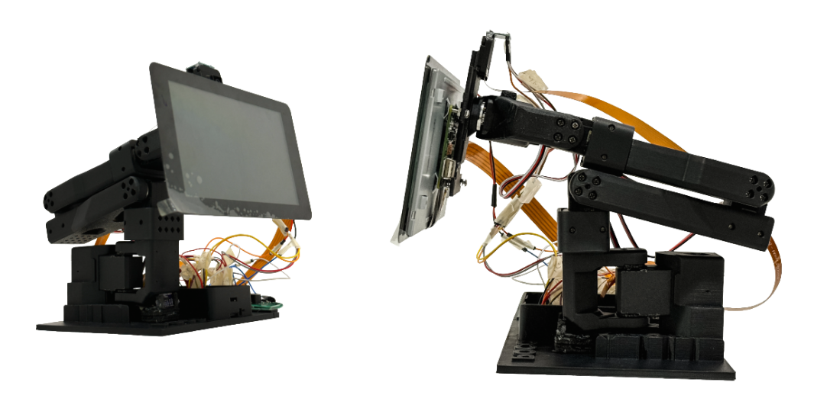
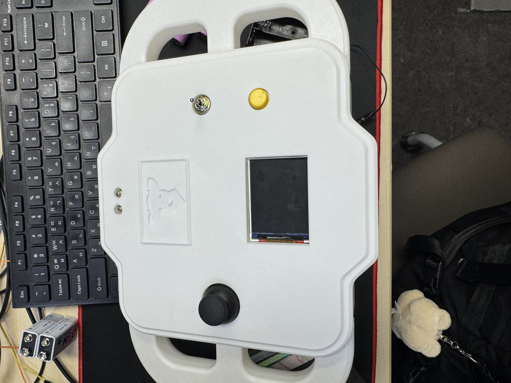

임베디드·장치 제어
- STM32 조종기의 RFID 인증·조이스틱 입력 처리·Bluetooth 명령 송신 구현
- FreeRTOS 기반 조종기 동작 상태 전환과 입력 처리 구성
- 기울기 센서와 PID를 이용한 모니터암 수평 보정 구현
소프트웨어에서, 장치의 움직임까지.
게임 개발·출시 경험을 바탕으로 임베디드·로봇 소프트웨어를 개발하는 신동민입니다. 현재 스마트팜 예찰 로봇의 주행과 작업 흐름을 개발하고 있습니다.
01 / EXPERIENCE
실무 개발과 출시 경험에서
임베디드·로봇 프로젝트까지.
모바일 게임 기능 개발 · API 연동 · 결제·광고 오류 대응
전체 프로그래밍·구조 설계 전담 · 모바일 게임 출시
장치 제어·시스템 통합 · 스마트팜 예찰 로봇 개발 중
02 / APPLIED EXPERIENCE
기술 분야별 주요 구현 내용
ROBOTICS / SMART FARM
작물 상태와 수확할 위치를 확인하는 예찰 로봇, 수확·이송 로봇과 선별 시스템이 협업하는 스마트팜 자동화 프로젝트입니다.
경로 이동 · 작물과 위치 확인
전달받은 위치에서 수확
수확물 운반과 분류
예찰 → 위치 정보 전달 → 수확 → 이송·선별 / 프로젝트 전체의 협업 개요
04 / SELECTED PROJECTS
무엇을 만들었는지, 그 안에서 무엇을 맡았는지.
AI 자세 코칭 모니터암
카메라로 자세를 분석하고 교정 피드백·일일 리포트를 제공하며, 정상 자세에서는 모니터 위치와 수평을 조절하는 AI 자세 코칭 시스템입니다.
자세 안내만으로 바뀌지 않는 작업 환경을 함께 개선하고자 했습니다. 잘못된 자세는 교정을 유도하고, 정상 자세를 기준으로 모니터가 움직이도록 자세 판단과 장치 제어를 연결했습니다.

PyQt 화면·리포트, 실행 구조 통합, IMU·PID 모니터암 수평 보정
카메라 영상으로 자세 분석
설정·리포트·분석 결과 연결
기울기 센서와 PID 수평 보정
직접 담당 영역: 사용자 화면·리포트 / 실행 구조 통합 / 수평 보정
STM32 분산 임베디드 RC카
카드 인증을 거친 사용자가 무선 조종기로 RC카를 운전하고, 차량 내부의 구동·센서·화면 장치가 CAN 통신으로 정보를 주고받는 시스템입니다.
실제 차량 전장의 역할 분담과 통신 구조를 작은 RC카에 구현하고자 했습니다. 조종·구동·환경 감지·상태 표시를 별도 장치로 나누고, 명령과 상태 정보를 연결하는 것을 목표로 했습니다.

무선 조종기 하드웨어·펌웨어, RFID 인증, 입력 처리·명령 송신
카드 인증 → 입력 처리 → 명령 송신
수신한 명령으로 주행 제어
CAN으로 차량 정보 공유
직접 담당 영역: 조종기 하드웨어와 펌웨어
소재 분류·적재·배출 자동화 시스템
금속·비금속 소재를 구분해 창고에 적재하고, 터치 조작 화면에서 저장 상태를 확인하며 필요한 소재를 꺼내는 PLC 기반 자동화 시스템입니다.
소재 공급부터 분류·보관·출고까지 하나의 공정으로 연결하는 것이 목표였습니다. 소재 종류와 저장 위치를 관리하고, 자동 배출뿐 아니라 지정 위치의 소재 배출과 창고 전체 비우기를 지원하도록 구성했습니다.

선택·전체 배출 순서, 작업 전환, 중복 실행 방지
소재를 구분해 창고에 보관
선택 배출 / 전체 배출
단계 전환·중복 명령 방지
직접 담당 영역: 소재 배출 순서와 작업 전환 제어